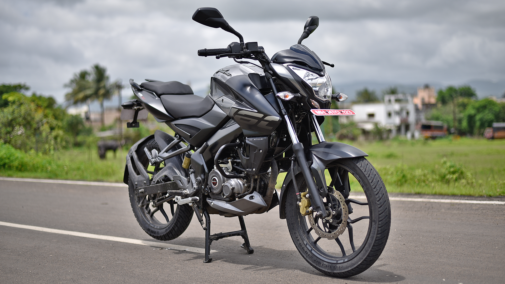

<ion-header [translucent]="true">
  <ion-toolbar>
    <ion-title>
     Expanding button screen transition
    </ion-title>
  </ion-toolbar>
</ion-header>

<ion-content [fullscreen]="true">
   <ion-fab slot="fixed" vertical="bottom" horizontal="end">
    <ion-fab-button color="danger" [class.expanding]="isExpanded" (click)="openModal()">
    </ion-fab-button>
  </ion-fab>

  <ion-card>
    <ion-card-header>
      <ion-card-title>NS 160</ion-card-title>
    </ion-card-header>
  
    <ion-card-content>
      
    </ion-card-content>
  </ion-card>
  <ion-card>
    <ion-card-header>
      <ion-card-title>NS 160</ion-card-title>
    </ion-card-header>
  
    <ion-card-content>
      
    </ion-card-content>
  </ion-card>
</ion-content>
